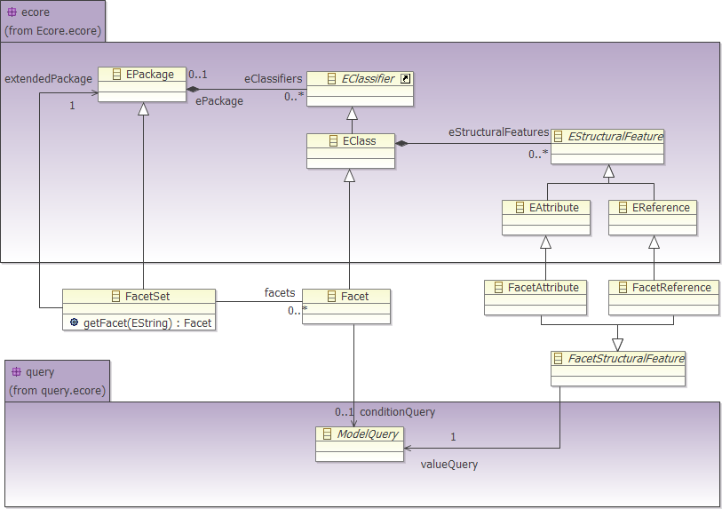

Here is an example of using the MoDisco facet API. For more information please refer to the JavaDoc.
import org.eclipse.emf.ecore.EObject; import org.eclipse.modisco.infra.query.core.exception.ModelQueryException; import org.eclipse.modisco.infra.facet.Facet; import org.eclipse.modisco.infra.facet.FacetSet; import org.eclipse.modisco.infra.facet.core.FacetSetCatalog; import org.eclipse.modisco.infra.facet.core.exception.ModiscoFacetException;
public class Example {
public Integer getNbAbstractMethod(EObject eObject)
throws ModelQueryException, ModiscoFacetException {
FacetSet facetSet = FacetSetCatalog.getSingleton().getFacetSet("My");
FacetContext context = new FacetContext();
context.addFacetSet(facetSet);
Facet facet = facetSet.getFacet("AbstractClassDeclaration");
if (context.isInstance(eObject, facet)) {
Object object = context.get(eObject, facet
.getEStructuralFeature("nbAbstractMethod"));
if (object instanceof Integer) {
Integer nbAbstractMethod = (Integer) object;
return nbAbstractMethod;
}
}
return null;
}
}
To package a facet set in a plug-in, an extension must be added in the plugin.xml file (contained by the facet set's project). The extension point to use is: org.eclipse.modisco.infra.facet.registration. Here is an example of a facet set declaration:
<plugin>
<extension
point="org.eclipse.modisco.infra.facet.registration">
<facetset
file="_example_jdkAndEclipseFacets.facetSet">
</facetset>
</extension>
</plugin>
Thanks to this extension declaration, the MoDisco project is ready to be exported as a plug-in.

The facet meta-model extends the ecore meta-model and uses the query meta-model.
A FacetSet is a kind of EPackage. A FacetSet contains facets through the eClassifier reference. A facet is a kind of EClass.
For a facet instance, the eSuperType reference must be set to specify which class the facet virtually extends.
The facet class has one specific reference: conditionQuery. The conditionQuery reference points to the ModelQuery class. The model queries pointed to by the conditionQuery reference must return a Boolean. Those queries are used to specify how to decide whether an instance conforms to a facet. If the conditionQuery is empty then all the instances of the class referred to by the facet instance through the eSuperType reference conform to this facet.
A facet contains facetAttributes and facetReferences through the eStructuralFeature reference. The FacetAttribute and FacetReference classes have a common super class: FacetStructuralFeature. The FacetStructuralFeature has one reference named valueQuery pointing to the ModelQuery class. The valueQuery is used to compute the facet structural feature value. The facetAttribute and facetReference must have the same type as the query they refer to.